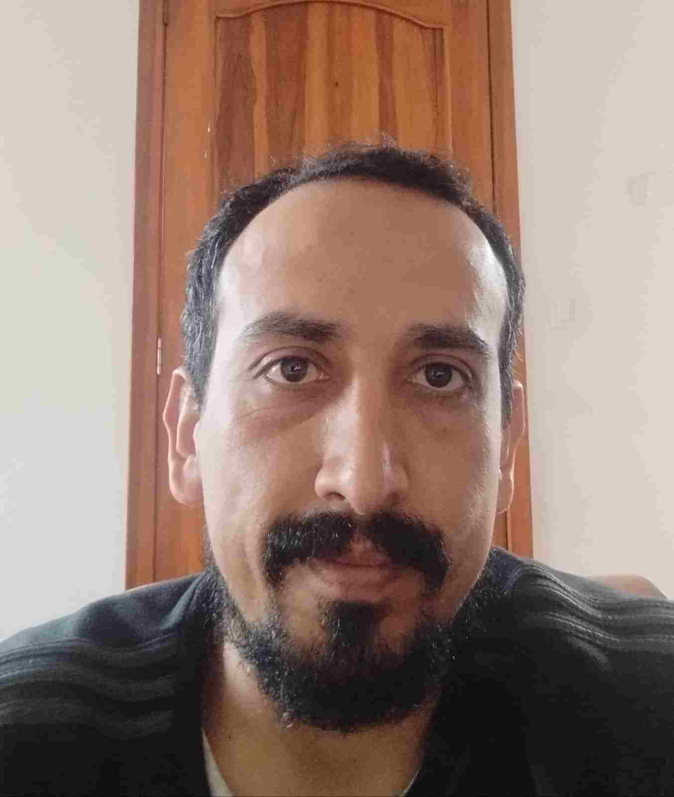

About Me
I am single and I really like reading. My favorite book is Siddhartha by Herman Hesse. I love running. My favorite food is food from the coast of my country, Italian, Thai and Mexican food. I am very excited to learn about web development.
Ecuador-Sudamerica
Ecuador (in Quechua, Ecuador; in Shuar, Ekuatur), officially the Republic of Ecuador (in Quechua, Ecuadorpi Ripuwlika; in Shuar, Ekuatur Nunka), is a sovereign country constituted in a social, democratic, legal and plurinational State, whose form of government is a presidential, unitary and decentralized republic. It is located in the northwestern region of South America. Its capital is Quito, and the most populated city in the country is Guayaquil.111213 It is a member of the Andean Community and is organized into twenty-four provinces which in turn are subdivided into cantons. It borders to the north with Colombia, to the east and south with Peru, and to the west with the Pacific Ocean. Which separates it from the Colón archipelago or Galapagos Islands by approximately one thousand kilometers of the continental coast, between the Santa Elena peninsula and San Cristóbal Island. It also borders Costa Rica on the maritime border of the island region.14 The equinoctial line or parallel 0° crosses the country and divides the continental and island territories in two, leaving most of the Ecuadorian territory in the southern hemisphere.